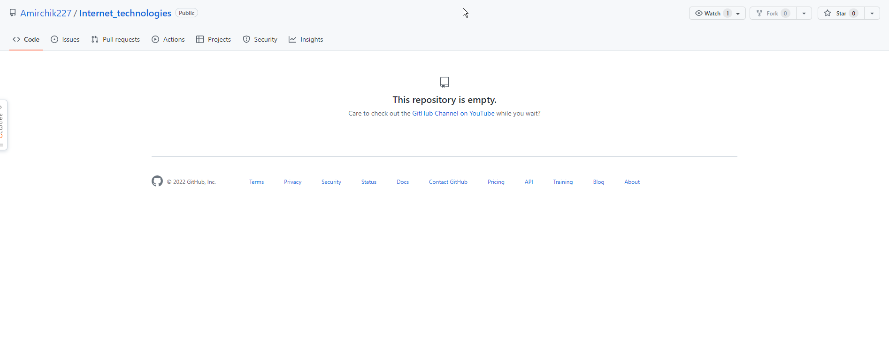
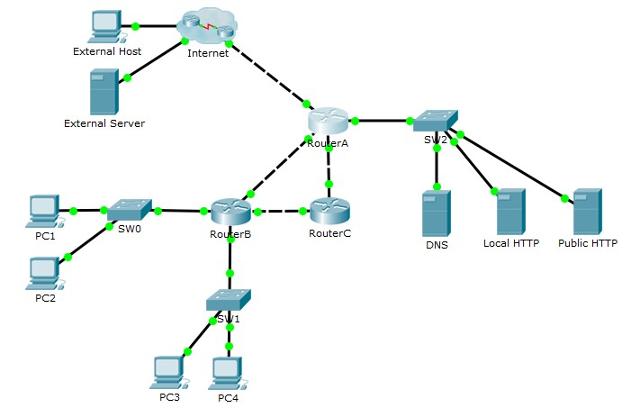

Шайдуллов Амир
МГТУ Станкин, группа ИДМ-22-07
МГТУ Станкин, группа ИДМ-22-07
Цель работы - создание onepage-отчета по лабораторным работам на GitHub и работа с Git.

Задачи работы:Была сформирована команда ProggersOfLuck и распределены роли в проекте
Цель работы - настройка коммутаторов и маршрутизаторов для осуществления работоспособности локальной сети
